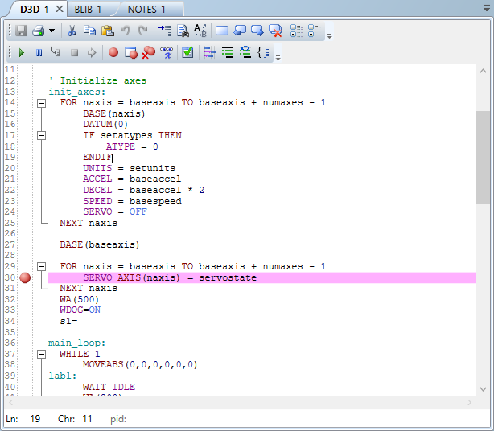
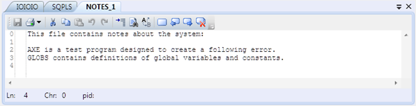
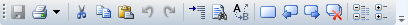
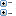
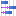

The Program Editor is used to edit TrioBASIC program files and text files which form part of a Motion Perfect project and to provide debugging facilities for TrioBASIC programs.

Editing a TrioBASIC program

Editing a text file
The editor performs in a similar way to most modern text editors. Editing functions are available for all supported program/file types, debugging functions and special formatting functions are only available when editing a TrioBASIC program.
There are two possible toolbars, “Editing Functions” which is always displayed and “Debugging Functions” which is only displayed when a Trio BASIC program is being edited.
When both toolbars are displayed the grab bar on the left of each toolbar can be used to rearrange them.
Editing functions are available from the Edit Toolbar:

The available editing functions are as follows and apply to the current program/file being edited:
Save to disk
 Print
Print
 Cut selected text to clipboard
Cut selected text to clipboard
 Copy selected text to clipboard
Copy selected text to clipboard
 Paste text from clipboard
Paste text from clipboard
 Undo last operation
Undo last operation
 Redo last undone operation
Redo last undone operation
Find text
Replace text
 Toggle bookmark
on current line
Toggle bookmark
on current line
 Go to previous
bookmark
Go to previous
bookmark
Go to next bookmark
 Clear all
bookmarks
Clear all
bookmarks
 Collapse all collapsible
sections (only available for Trio BASIC)
Collapse all collapsible
sections (only available for Trio BASIC)
 Expand all collapsible sections (only available for Trio BASIC)
Some editing functions are available on the Editor Context Menu.
Debugging functions are available from the Debug Toolbar.
The available debugging functions are as follows and apply to the current program being edited:
 Run
Run
Pause/Step
Stop
Go to current execution line (when stepping program)
Toggle breakpoint on current line
Show all breakpoints
Remove all breakpoints
 Watch variable
Watch variable
Compile program
 Auto-format text
Comment out selected lines
 Un-comment
selected lines
Un-comment
selected lines
Go to end/start of scope (program structure) which starts/ends on the current line
Some debugging functions are available on the Editor Context Menu.
Right clicking anywhere in the editor working area will display a context menu containing the following entries:
|
Entry |
Description |
|
Cut |
Cut the currently selected text to the clipboard. |
|
Copy |
Copy the currently selected text to the clipboard. |
|
Paste |
Paste text from the clipboard at the current position. |
|
Find |
Find text in this program |
|
Find in Project |
Find text in all suitable programs in this project |
|
Replace |
Replace text in this program |
|
Delete word |
Delete the word at the current position (If any). |
|
Delete Line |
Delete the current line. |
|
Toggle Breakpoint |
Toggle a breakpoint on the current line. |
|
Toggle Bookmark |
Toggle a bookmark on the current line. |
|
Watch Variable |
Watch the currently selected variable. |
Editing is performed in a similar way to most other Windows text editors using the normal methods for text insertion and interacting with the clipboard.
There are several advanced features to assist in program development:
Auto-assist provides help when typing in a program. After two consecutive letters have been typed a tool-tip window pops up containing a list of possible keywords and variable names. This should be of great assistance to a user who is not familiar with the whole Trio BASIC instruction set.
If a keyword which is a function name and an opening bracket is typed a tool-tip window will open giving a brief outline of the possible parameters for the function.
Code collapse enables the user to collapse (hide) the contents of sections of code based on the structure of the program. This means that more useful information can be displayed on the screen under some circumstances.
Although the editor appears to work like any other text editor it has one main difference. Each line of text is sent to the connected controller as it is entered or edited. This means that the controller is always kept up to date with changes. The controller is used to perform syntax checking when editing a Trio BASIC program, removing any possibility that the syntax is checked against out of date rules. All compiling and debugging operations are also carried out on the actual controller.
The values of variables can be watched while a program is running or being stepped. This is done using the " Watch Variables " tool, which can be used to monitor both local and VR variables.
To add a variable to the watch list, select the variable
name (including index if a VR) in the editor, then select "Watch
Variable" from the context menu or click on the
 icon in the editor toolbar.
Alternatively, if the "
Watch Variables
"
tool is open, select the variable name then drag and drop it into the "
Watch Variables
" tool.
icon in the editor toolbar.
Alternatively, if the "
Watch Variables
"
tool is open, select the variable name then drag and drop it into the "
Watch Variables
" tool.
The general appearance of the editor can be customized using
the Program Editor pages in the main
Options Dialog
.